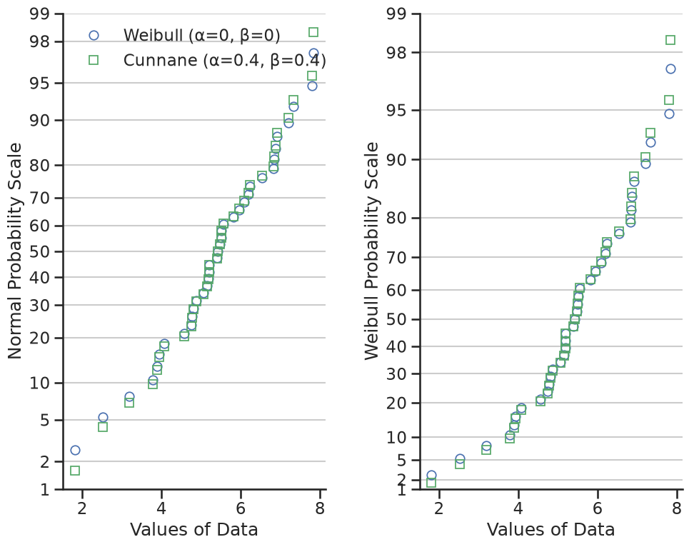
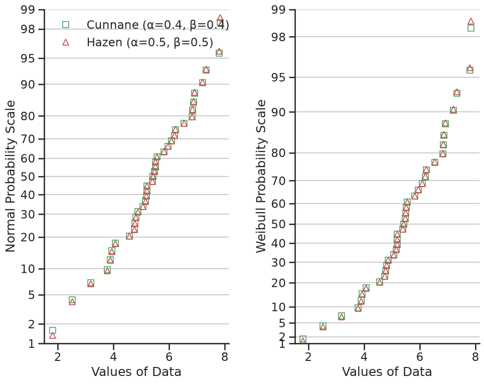
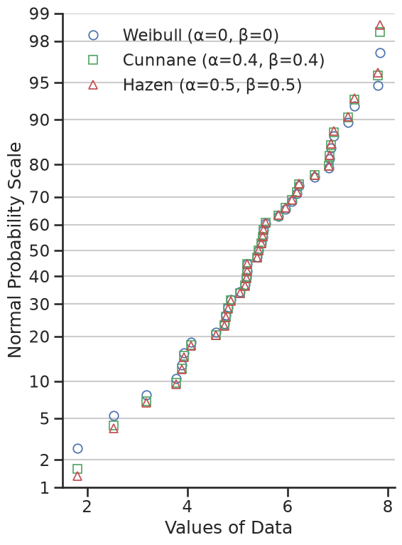

Using different formulations of plotting positions#
Computing plotting positions#
When drawing a percentile, quantile, or probability plot, the potting positions of ordered data must be computed.
For a sample $X$ with population size $n$, the plotting position of of the $j^\mathrm{th}$ element is defined as:
$$ \frac{x_{j} - \alpha}{n + 1 - \alpha - \beta } $$
In this equation, α and β can take on several values. Common values are described below:
The purpose of this tutorial is to show how the selected α and β can alter the shape of a probability plot.
First let’s get some analytical setup out of the way…
%matplotlib inline
import warnings
warnings.simplefilter("ignore")
import numpy
import seaborn
from matplotlib import pyplot
from scipy import stats
clear_bkgd = {"axes.facecolor": "none", "figure.facecolor": "none"}
seaborn.set_theme(style="ticks", context="talk", color_codes=True, rc=clear_bkgd)
import probscale
def format_axes(ax1, ax2):
"""Sets axes labels and grids"""
for ax in (ax1, ax2):
if ax is not None:
ax.set_ylim(bottom=1, top=99)
ax.set_xlabel("Values of Data")
seaborn.despine(ax=ax)
ax.yaxis.grid(True)
ax1.legend(loc="upper left", numpoints=1, frameon=False)
ax1.set_ylabel("Normal Probability Scale")
if ax2 is not None:
ax2.set_ylabel("Weibull Probability Scale")
Normal vs Weibull scales and Cunnane vs Weibull plotting positions#
Here we’ll generate some fake, normally distributed data and define a Weibull distribution from scipy to use for a probability scale.
numpy.random.seed(0) # reproducible
data = numpy.random.normal(loc=5, scale=1.25, size=37)
# simple weibull distribution
weibull = stats.weibull_min(2)
Now let’s create probability plots on both Weibull and normal probability scales. Additionally, we’ll compute the plotting positions two different but common ways for each plot.
First, in blue circles, we’ll show the data with Weibull (α=0, β=0) plotting positions. Weibull plotting positions are commonly use in fields such as hydrology and water resources engineering.
In green squares, we’ll use Cunnane (α=0.4, β=0.4) plotting positions. Cunnane plotting positions are good for normally distributed data and are the default values.
w_opts = {"label": "Weibull (α=0, β=0)", "marker": "o", "markeredgecolor": "b"}
c_opts = {"label": "Cunnane (α=0.4, β=0.4)", "marker": "s", "markeredgecolor": "g"}
common_opts = {"markerfacecolor": "none", "markeredgewidth": 1.25, "linestyle": "none"}
fig, (ax1, ax2) = pyplot.subplots(figsize=(10, 8), ncols=2, sharex=True, sharey=False)
for dist, ax in zip([None, weibull], [ax1, ax2]):
for opts, postype in zip(
[
w_opts,
c_opts,
],
["weibull", "cunnane"],
):
probscale.probplot(
data,
ax=ax,
dist=dist,
probax="y",
scatter_kws={**opts, **common_opts},
pp_kws={"postype": postype},
)
format_axes(ax1, ax2)
fig.tight_layout()

This demonstrates that the different formulations of the plotting positions vary most at the extreme values of the dataset.
Hazen plotting positions#
Next, let’s compare the Hazen/Type 5 (α=0.5, β=0.5) formulation to Cunnane. Hazen plotting positions (shown as red triangles) represent a piece-wise linear interpolation of the empirical cumulative distribution function of the dataset.
Given the values of α and β=0.5 vary only slightly from the Cunnane values, the plotting position predictably are similar.
h_opts = {"label": "Hazen (α=0.5, β=0.5)", "marker": "^", "markeredgecolor": "r"}
fig, (ax1, ax2) = pyplot.subplots(figsize=(10, 8), ncols=2, sharex=True, sharey=False)
for dist, ax in zip([None, weibull], [ax1, ax2]):
for opts, postype in zip(
[
c_opts,
h_opts,
],
["cunnane", "Hazen"],
):
probscale.probplot(
data,
ax=ax,
dist=dist,
probax="y",
scatter_kws={**opts, **common_opts},
pp_kws={"postype": postype},
)
format_axes(ax1, ax2)
fig.tight_layout()

Summary#
At the risk of showing a very cluttered and hard to read figure, let’s throw all three on the same normal probability scale:
fig, ax1 = pyplot.subplots(figsize=(6, 8))
for opts, postype in zip(
[
w_opts,
c_opts,
h_opts,
],
["weibull", "cunnane", "hazen"],
):
probscale.probplot(
data,
ax=ax1,
dist=None,
probax="y",
scatter_kws={**opts, **common_opts},
pp_kws={"postype": postype},
)
format_axes(ax1, None)
fig.tight_layout()

Again, the different values of α and β don’t significantly alter the shape of the probability plot near between – say – the lower and upper quartiles. Beyond the quartiles, however, the difference is more obvious.
The cell below computes the plotting positions with the three sets of α and β values that we’ve investigated and prints the first ten value for easy comparison.
# weibull plotting positions and sorted data
w_probs, _ = probscale.plot_pos(data, postype="weibull")
# normal plotting positions, returned "data" is identical to above
c_probs, _ = probscale.plot_pos(data, postype="cunnane")
# type 4 plot positions
h_probs, _ = probscale.plot_pos(data, postype="hazen")
# convert to percentages
w_probs *= 100
c_probs *= 100
h_probs *= 100
print("Weibull: ", numpy.round(w_probs[:10], 2))
print("Cunnane: ", numpy.round(c_probs[:10], 2))
print("Hazen: ", numpy.round(h_probs[:10], 2))
Weibull: [ 2.63 5.26 7.89 10.53 13.16 15.79 18.42 21.05 23.68 26.32]
Cunnane: [ 1.61 4.3 6.99 9.68 12.37 15.05 17.74 20.43 23.12 25.81]
Hazen: [ 1.35 4.05 6.76 9.46 12.16 14.86 17.57 20.27 22.97 25.68]